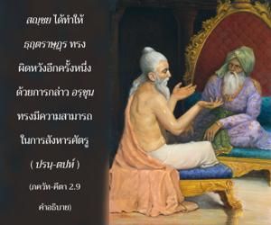

สญฺชย กล่าวว่า หลังจากตรัสเช่นนี้แล้ว อรฺชุน ผู้กำราบศัตรูตรัสต่อองค์กฺฤษฺณว่า “ข้าแต่องค์ โควินฺท ข้าพเจ้าจะไม่รบ” และมีอาการสงบนิ่ง

พระราชา ธฺฤตราษฺฏฺร ทรงมีความยินดีมากที่รู้ว่า อรฺชุน ไม่ยอมที่จะรบ และจะหนีออกจากสนามรบเพื่อไปภิกขาจารหาเลี้ยงชีพ แต่ สญฺชย ได้ทำให้ ธฺฤตราษฺฏฺร ทรงผิดหวังอีกครั้งหนึ่งด้วยการกล่าว อรฺชุน ทรงมีความสามารถในการสังหารศัตรู ( ปรนฺ-ตปห์ ) ถึงแม้ในตอนนี้ อรฺชุน จะเปี่ยมไปด้วยความเศร้าโศกอันมิบังควรเนื่องจากความรักและความห่วงใยที่มีต่อครอบครัว อรฺชุน ทรงยอมศิโรราบมาเป็นสาวกขององค์กฺฤษฺณพระอาจารย์ทิพย์สูงสุด แสดงให้เห็นว่าในไม่ช้าจะเป็นอิสระจากความเศร้าโศกอันมิควรซึ่งมีผลสืบเนื่องมาจากความรักและความห่วงใยในครอบครัว และจะได้รับแสงสว่างจากความรู้อันสมบูรณ์ในการรู้แจ้งแห่งตนหรือ กฺฤษฺณจิตสำนึก จากนั้น อรฺชุน จะทรงลุกขึ้นมาสู้อย่างแน่นอน ดังนั้นความสุขของ ธฺฤตราษฺฏฺร ทรงถูกลบเลือนหายไปเพราะองค์กฺฤษฺณทรงทำให้ อรฺชุน ได้รับแสงสว่างและจะต่อสู้จนถึงที่สุด